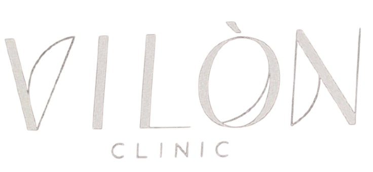
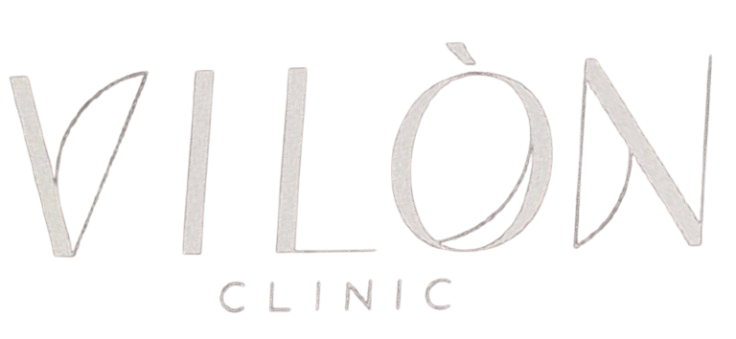

-
تقديم
هذا التقرير هو هدية نمو حصرية من وكالة Book Them Solid، المتخصصة في تحويل العيادات التجميلية إلى رائدة في السوق المحلي. نحن لا نقدم مجرد اقتراح، بل صممنا نظاماً مخصصاً لـ ڤيلون كلينيك لضمان امتلاء المواعيد دائماً وبناء علاقات دائمة مع المرضى.
-
موظف ذكاء اصطناعي لحجوزات أكثر
محرك المواعيد الذي لا ينام. في عام 2026، التأخير لـ 5 دقائق يعني خسارة مريض. يقوم عملاء الذكاء الاصطناعي لدينا بالرد على عملاء ڤيلون كلينيك في أقل من 60 ثانية، على مدار الساعة. هم لا يكتفون بجمع البيانات، بل يديرون المحادثات ويجيبون على الأسئلة ويحجزون المواعيد مباشرة في جدولك.
-
تطبيق ڤيلون.. تجربة فخمة
تشير الدراسات إلى أن المرضى المشتركين في برامج ولاء خاصة يزورون العيادة 2.9 مرة في السنة وينفقون 35% أكثر في كل زيارة. يتضمن نظامنا تطبيقاً خاصاً لـ ڤيلون كلينيك، يضع عيادتك على شاشات هواتف مرضاك، مما يحول التعاملات من زيارة عابرة إلى دخل متكرر عبر المكافآت التلقائية والمزايا الحصرية.
-
ادفع فقط عندما يدخل المريض عيادتك
توقف عن "استئجار" جمهورك. بينما تعتبر إعلانات ميتا أسرع وسيلة لجذب مرضى جدد، تطلب معظم الوكالات مبالغ طائلة بغض النظر عن النتائج. نظامنا مختلف: أنت تمول الإنفاق الإعلاني مباشرة، ولا تدفع لنا أي رسوم خدمة إلا عندما يحضر المريض فعلياً إلى ڤيلون كلينيك. نستخدم إعلانات عالية الاستهداف لجذبهم، ولكن هدفنا هو مساعدتك على "امتلاك" علاقتك بهذا الجمهور للأبد.
-
سمعة أقوى
درع السمعة: احمِ نجومك. زيادة نجمة واحدة فقط في تقييم جوجل يمكن أن ترفع الدخل بنسبة 5% إلى 9%. يقوم نظامنا تلقائياً باعتراض الملاحظات السلبية بشكل خاص لتمكينكم من حلها داخلياً، بينما يوجه المرضى السعداء (4 نجوم فأكثر) لترك تقييماتهم على جوجل لبناء سلطتكم المحلية.
 

 +964 771 958 1345
+964 771 958 1345